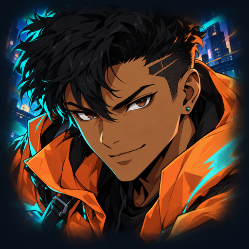

<- all projects

Neon Relay
PC
Volume
Live
Jump, slide and burst across neon rooftops in a fast anime courier runner.
Neon Relay is an anime parkour runner starring Kai, a rooftop courier chasing clean lines, tight deadlines and one more perfect delivery. Change lanes, jump gaps and slide beneath beams while keeping the parcel safe. Chain clean tricks, collect route stamps and charge a kinetic Burst that blasts through anything in your way. Run 24 campaign contracts through four districts, where forty authored route phrases, route forks, rain and wind keep each line different. Draft from 12 shoe modules after every delivery, improve five permanent skills and race the ghost of your best clean run.